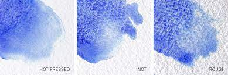

The first watercolor paintings to date were discovered on ancient cave walls. Since then, the materials used to paint on have evolved. The Egyptians used papyrus, the Chinese and Japanese used silk, other civilizations used parchment and wood, and once paper was invented, people used whatever kind of paper they had on hand. Now today, we have specialized watercolor paper just for watercolor painting.
In 1767, woven paper was first invented and then in 1788, it was combined with gelatin to provide paper more durable use for watercolors. This new paper no longer retained the lines of their paper-making molds, watercolor washes would no longer pool, and it was more durable, reducing the damage to the paper caused by wetting, rewetting, and reworking the watercolor painting. There are now various watercolor papers of different sizes, textures, and materials, along with weights. The materials used today are either 100% cotton for artist grade paper or wood pulp for student grade paper. The size of the watercolor paper is what controls the paper's absorbancy, it's the internal and/or external sizing agent added to the paper. The texture is created by the different pressure treatments during production and impacts how a finished painting looks. The weight is the thickness of the paper measured in grams per square meter or pounds. The heavier in weight the paper is, the thicker and stronger it is. As with paints, the more high quality the paper, the longer the artwork will last over time.